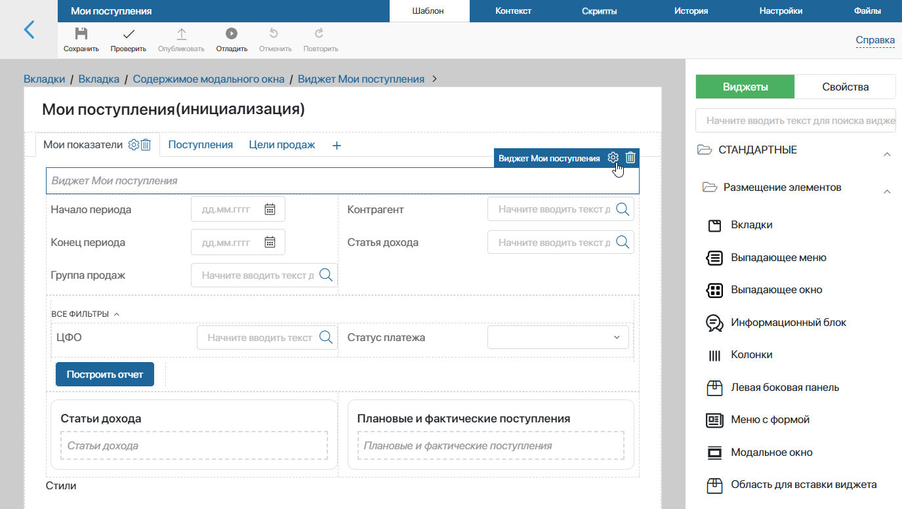
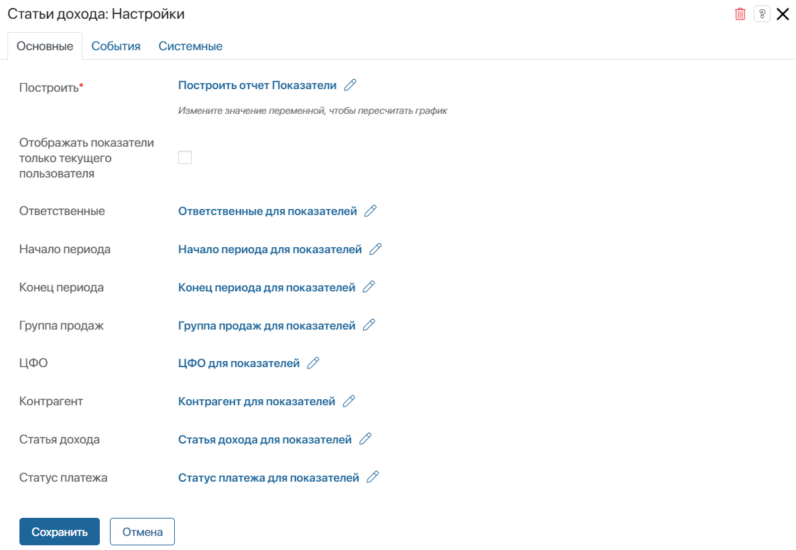
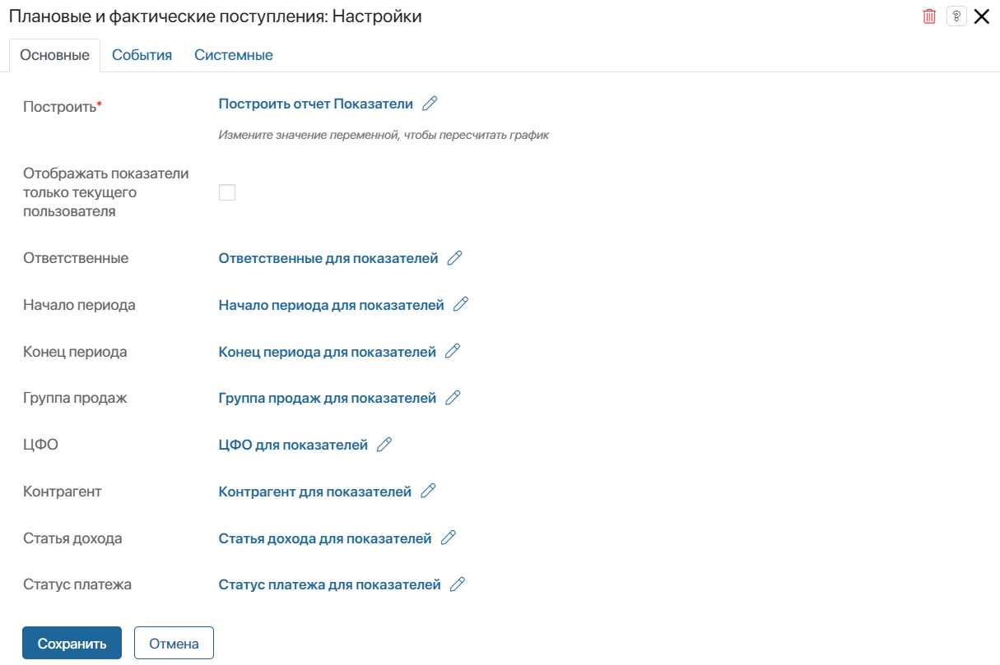
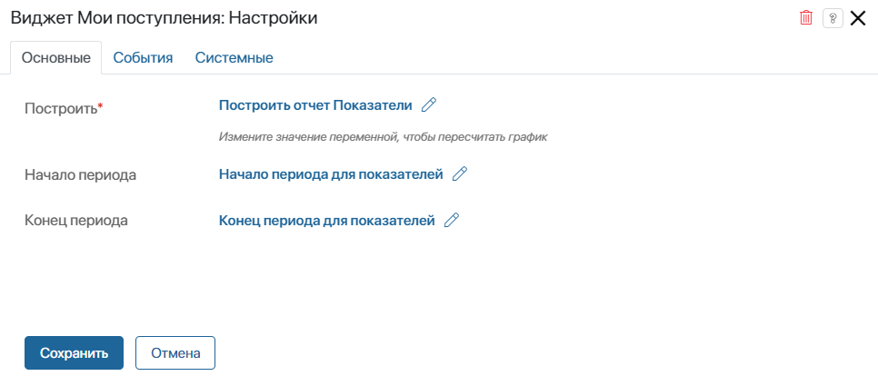
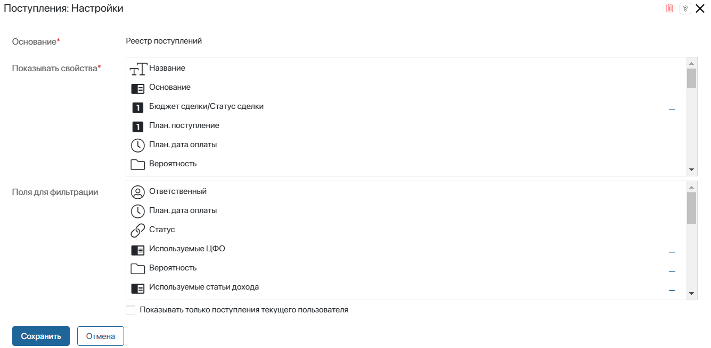
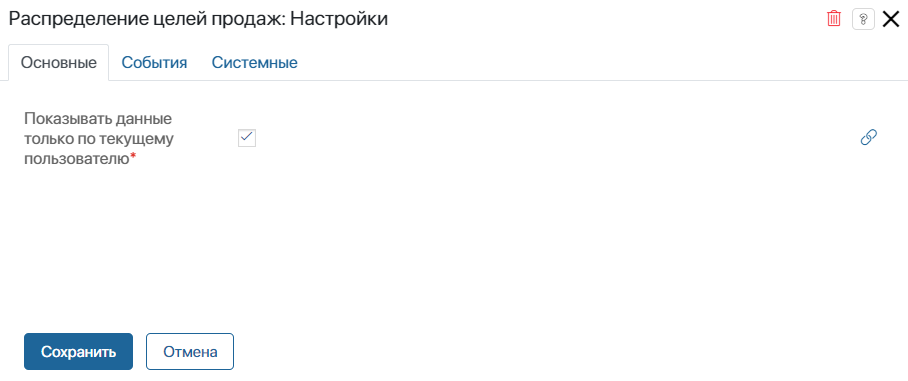

Преднастроенные в разделе Поступления страницы с отчётами Все поступления и Мои поступления состоят из отдельных вкладок и виджетов.
Вы можете конфигурировать эти страницы под индивидуальные требования вашей компании. Например, можно изменять настройки виджетов, удалять их и использовать несколько раз для отображения различных данных. Кроме того, можно дополнять страницу с отчётом другими виджетами системы.
К виджетам отчётов Все поступления и Мои поступления относятся:
- Статьи дохода;
- Плановые и фактические поступления;
- Мои поступления;
- Поступления;
- Распределение целей продаж.
Эти виджеты можно перенастраивать, а также выносить на другие страницы системы.
Начало внимание
Изменять внешний вид страниц с отчётами и настраивать виджеты могут только пользователи, включённые в группу Администраторы.
Конец внимание
Настроить страницу с отчётами
Чтобы изменить текущие настройки, выполните следующие действия:
- Перейдите в раздел Поступления и в левом меню выберите страницу Все поступления или Мои поступления.
- Нажмите на значок шестерёнки рядом с названием страницы и выберите пункт Конструктор.
- В открывшемся дизайнере интерфейсов выберите нужную вкладку: Показатели/Мои показатели, Поступления или Цели продаж.
Вы можете настроить свойства, отвечающие за фильтрацию данных в отчётах, а также виджеты.

- Выберите виджет и нажмите значок шестерёнки рядом с его названием.
- В открывшемся окне вы можете изменить следующие параметры:
- поля, заданные по умолчанию и отвечающие за корректное построение отчёта;
- опции, которые определяют внешний вид построенных графиков и списков.
Опции в настройках преднастроенных виджетов связаны с переменными, добавленными по умолчанию в контекст виджета. Значения для переменных зависят от данных, указанных в одноимённых фильтрах при построении отчёта.
Вы можете изменить параметры, указав в опциях другие переменные, добавленные вручную в дизайнере интерфейсов на вкладке Контекст. Для этого нажмите на значение поля и выберите свойство из списка. Требования к типам данных для переменных каждого виджета приведены далее.
- Для завершения настройки виджета нажмите кнопку Сохранить.
- Чтобы настроенная страница стала доступна пользователям, нажмите Сохранить и Опубликовать на верхней панели дизайнера интерфейсов.
Рассмотрим подробнее виджеты, из которых состоят страницы с отчётами.
Виджет «Статьи дохода»
Виджет размещён на страницах Все поступления и Мои поступления на вкладке Показатели и Мои показатели. Он отображает количество плановых или фактических поступлений, сгруппированные по статьям дохода.
Например, с помощью этого виджета на странице Все поступления руководитель может посмотреть, по какой статье дохода выбранная группа продаж чаще всего совершала сделки в текущем месяце.

- Построить* — опция связана с переменной Построить отчет Показатели типа Выбор «да/нет». Когда пользователь нажимает кнопку Построить на странице отчёта, значение переменной меняется, и виджет автоматически отображает статистику по заданным в фильтрах параметрам;
- Отображать показатели только текущего пользователя — опция отвечает за построение графика по данным текущего сотрудника;
- Ответственные — опция связана с переменной типа Пользователи. Когда руководитель заполняет фильтр Ответственные на странице отчёта и нажимает кнопку Построить, значение переменной меняется. Виджет автоматически покажет статистику по выбранным сотрудникам.
В настройках виджетов, размещённых на странице Мои поступления, поле Ответственные можно оставить пустым;
- Начало периода, Конец периода — опции связаны с переменными типа Дата/время;
- Группа продаж, ЦФО, Статья дохода — опции связаны с переменными типа Приложение, которые ссылаются на справочники Группы продаж, ЦФО и Статьи дохода;
- Контрагент — опция связана с переменной типа Приложение, которая ссылается на приложение Компании из раздела CRM;
- Статус платежа — опция связана с переменной типа Категория, в которой содержатся два значения: Поступившие с кодом received и Непоступившие с кодом missed.
Виджет «Плановые и фактические поступления»
Виджет размещён на страницах Все поступления и Мои поступления на вкладках Показатели и Мои показатели. В этом виджете в виде графика отображается соотношение запланированных платежей и поступивших оплат. Статистику по всему заданному периоду можно отобразить по дням, неделям или месяцам.

Требования к типам данных для переменных данного виджета аналогичны требованиям, приведённым в описании виджета Статьи дохода.
Виджет «Мои поступления»
Виджет размещён на странице Мои поступления на вкладке Мои показатели. Он отображает отчёт для текущего сотрудника по суммам: цель, план и факт. На основе сравнения этих показателей высчитываются и выводятся проценты выполнения плана и текущей цели. Также в виджете показывается текущий статус цели и оставшаяся до её выполнения сумма дохода.

- Построить* — опция связана с переменной Построить отчет Показатели типа Выбор «да/нет». Когда пользователь нажимает кнопку Построить на странице отчёта, значение переменной меняется, и виджет автоматически отображает статистику по заданным в фильтрах параметрам;
- Начало периода, Конец периода — опции связаны с переменными типа Дата/время.
Виджет «Поступления»
Виджет размещён на страницах Все поступления и Мои поступления на вкладке Поступления. Он представляет собой таблицу с запланированными и поступившими от контрагентов платежами. Данные в таблице можно отфильтровать. Также из таблицы можно создавать новые фактические поступления, не переходя в приложение Реестр поступлений.

- Основание* — в поле автоматически указывается приложение Реестр поступлений, на основании данных из которого строится отчёт;
- Показывать свойства* — выберите поля из приложения Реестр поступлений, которые хотите показывать в таблице в виджете. Выбранные по умолчанию поля Название, Основание, План. поступление, План. дата оплаты, Вероятность, Факт. поступление, Факт. дата оплаты, Статус и Счет нельзя исключить из таблицы;
- Поля для фильтрации — выберите поля из приложения Реестр поступлений, по которым хотите фильтровать данные в таблице. Выбранные по умолчанию поля Ответственный, План. дата оплаты, Статус нельзя исключить из фильтра;
- Показывать только поступления текущего пользователя — включите опцию, чтобы пользователи могли просматривать в таблице только те поступления, в которых они указаны как ответственные.
Обратите внимание, этот виджет также можно выносить на формы приложений-оснований для поступлений, например, на формы сделок. В этом случае в настройках виджета будет использоваться другой набор параметров. Подробнее об этом читайте в статье «Поступления».
Виджет «Распределение целей продаж»
Виджет размещён на страницах Все поступления и Мои поступления на вкладке Цели продаж. Он показывает таблицу с целями по выручке, а также данными по плановым и фактическим доходам. На основе сравнения этих показателей высчитываются проценты выполнения целей.
Пользователи с доступом на создание и редактирование элементов приложения Цели продаж могут добавлять новые или изменять существующие цели из таблицы.

Включите опцию Показывать данные только по текущему пользователю*, чтобы пользователи могли просматривать в таблице только те цели, в которых они указаны как ответственные.
Настройки на вкладках «События» и «Системные»
На этих вкладках, одинаковых для всех виджетов, задаются системные настройки. Они позволяют управлять видимостью виджетов и доступом к ним, настраивать их поведение при наведении курсора и т. д. Подробнее об этом читайте в статье «Системные настройки виджетов».